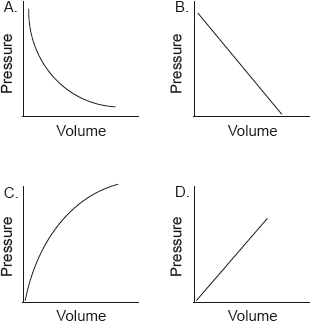
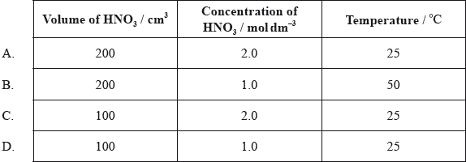
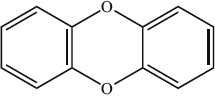

SL Paper 1
Which sample has the greatest mass?
A. 1 mol of \({\text{S}}{{\text{O}}_{\text{2}}}\)
B. 2 mol of \({{\text{N}}_{\text{2}}}{\text{O}}\)
C. 2 mol of Ar
D. 4 mol of \({\text{N}}{{\text{H}}_{\text{3}}}\)
Markscheme
B
Examiners report
What is the total number of atoms in 0.100 mol of \({\text{[Pt(N}}{{\text{H}}_3}{{\text{)}}_2}{\text{C}}{{\text{l}}_2}{\text{]}}\)?
A. 11
B. \(6.02 \times {10^{22}}\)
C. \(3.01 \times {10^{23}}\)
D. \(6.62 \times {10^{23}}\)
Markscheme
D
Examiners report
Nitroglycerine, \({{\text{C}}_3}{{\text{H}}_5}{{\text{N}}_3}{{\text{O}}_{\text{9}}}\), can be used in the manufacture of explosives. What is the coefficient of \({{\text{C}}_3}{{\text{H}}_5}{{\text{N}}_3}{{\text{O}}_9}({\text{l)}}\) when the equation for its decomposition reaction is balanced using the lowest whole numbers?
___ \({{\text{C}}_3}{{\text{H}}_5}{{\text{N}}_3}{{\text{O}}_9}{\text{(l)}} \to \) ___ \({\text{C}}{{\text{O}}_2}{\text{(g)}} + \) ___ \({{\text{H}}_2}{\text{O(l)}} + \) ___ \({{\text{N}}_2}{\text{(g)}} + \) ___ \({{\text{O}}_2}{\text{(g)}}\)
A. 2
B. 4
C. 20
D. 33
Markscheme
B
Examiners report
One respondent stated that this question was particularly difficult. Although the question was challenging, 66.89% of candidates did manage to get the correct answer B. The question was the ninth hardest question on the paper.
4.00 mol of a hydrocarbon with an empirical formula of \({\text{C}}{{\text{H}}_{\text{2}}}\) has a mass of 280 g. What is the molecular formula of this compound?
A. \({{\text{C}}_{\text{2}}}{{\text{H}}_{\text{4}}}\)
B. \({{\text{C}}_{\text{3}}}{{\text{H}}_{\text{6}}}\)
C. \({{\text{C}}_{\text{4}}}{{\text{H}}_{\text{8}}}\)
D. \({{\text{C}}_{\text{5}}}{{\text{H}}_{{\text{10}}}}\)
Markscheme
D
Examiners report
The volume occupied by one mole of an ideal gas at 273 K and \(1.01 \times {10^5}{\text{ Pa}}\) is \({\text{22.4 d}}{{\text{m}}^{\text{3}}}\). What volume, in \({\text{d}}{{\text{m}}^{\text{3}}}\), is occupied by 3.20 g \({{\text{O}}_{\text{2}}}{\text{(g)}}\) at 273 K and \(1.01 \times {10^5}{\text{ Pa}}\)?
A. 2.24
B. 4.48
C. 22.4
D. 71.7
Markscheme
A
Examiners report
One respondent stated that he/she was not sure if memorization of standard pressure in Pa was required for this question. In this question candidates had first to calculate the amount occupied by 3.20 g of \({{\text{O}}_{\text{2}}}{\text{(g)}}\). This was found by dividing 3.20 by \(32.00 = 0.100{\text{ mol}}\). Then, the volume in \({\text{d}}{{\text{m}}^{\text{3}}}\) was obtained by simply multiplying 0.100 by 22.4, giving an answer of \({\text{2.24 d}}{{\text{m}}^{\text{3}}}\), meaning A is the correct answer. The conditions of temperature and pressure were the same at 273 K and \({\text{1.01}} \times {\text{1}}{{\text{0}}^{\text{5}}}{\text{ Pa}}\). 49.15% of candidates got the correct answer.
\({\text{1.0 d}}{{\text{m}}^{\text{3}}}\) of an ideal gas at 100 kPa and 25 °C is heated to 50 °C at constant pressure. What is the new volume in \({\text{d}}{{\text{m}}^{\text{3}}}\)?
A. 0.50
B. 0.90
C. 1.1
D. 2.0
Markscheme
C
Examiners report
In which mixture is NaOH the limiting reagent?
A. 0.20mol NaOH + 0.10mol H2SO4
B. 0.10mol NaOH + 0.10mol H2SO4
C. 0.20mol NaOH + 0.10mol HNO3
D. 0.10mol NaOH + 0.10mol HNO3
Markscheme
B
Examiners report
What is the percentage yield when 2.0 g of ethene, C2H4, is formed from 5.0 g of ethanol, C2H5OH?
Mr(ethene) = 28; Mr(ethanol) = 46
A. \(\frac{{2.0}}{{28}} \times \frac{{5.0}}{{46}} \times 100\)
B. \(\frac{{\frac{{2.0}}{{28}}}}{{\frac{{5.0}}{{46}}}} \times 100\)
C. \(\frac{{28}}{{2.0}} \times \frac{{5.0}}{{46}} \times 100\)
D. \(\frac{{\frac{{28}}{{2.0}}}}{{\frac{{5.0}}{{46}}}} \times 100\)
Markscheme
B
Examiners report
Which graph shows the relationship between the volume and pressure of a fixed mass of an ideal gas?

Markscheme
A
Examiners report
How many molecules are present in a drop of ethanol, \({{\text{C}}_{\text{2}}}{{\text{H}}_{\text{5}}}{\text{OH}}\), of mass \(2.3 \times {10^{ - 3}}{\text{ g}}\)? \(({{L}} = 6.0 \times {10^{23}}{\text{ mo}}{{\text{l}}^{ - 1}})\)
A. \(3.0 \times {10^{19}}\)
B. \(3.0 \times {10^{20}}\)
C. \(6.0 \times {10^{20}}\)
D. \(6.0 \times {10^{26}}\)
Markscheme
A
Examiners report
Some respondents stated that the numbers could have been more user-friendly in these questions, as candidates do not have access to a calculator in P1. This is a fair comment which will be borne in mind for future paper-setting. Candidates found Q3 particularly challenging with only 35.79% of candidates getting the correct answer A. The inconsistent use of significant figures in Q2 was also commented on, equally a valid comment. One respondent stated that they found the use of \({\text{d}}{{\text{m}}^{\text{3}}}\) instead of L confusing for North American candidates. However on IB Chemistry papers the unit of \({\text{d}}{{\text{m}}^{\text{3}}}\) for volume is always used instead of L and candidates should be prepared for this.
What is the total number of nitrogen atoms in two mol of \({\text{N}}{{\text{H}}_{\text{4}}}{\text{N}}{{\text{O}}_{\text{3}}}\)?
A. 4
B. \(6.02 \times {10^{23}}\)
C. \(1.20 \times {10^{24}}\)
D. \(2.41 \times {10^{24}}\)
Markscheme
D
Examiners report
Which statements about solutions are correct?
I. A solute dissolves in a solvent to form a solution.
II. A solution is a homogeneous mixture of two or more substances.
III. Concentrations of solutions can be expressed in \({\text{g}}\,{\text{d}}{{\text{m}}^{ - 3}}\).
A. I and II only
B. I and III only
C. II and III only
D. I, II and III
Markscheme
D
Examiners report
The equation for the reduction of iron(III) oxide is:
\[{\text{F}}{{\text{e}}_2}{{\text{O}}_3}{\text{(s)}} + {\text{3CO(g)}} \to {\text{2Fe(s)}} + {\text{3C}}{{\text{O}}_2}{\text{(g)}}\]
What mass of carbon dioxide, in g, is produced by the complete reduction of 80 g of iron(III) oxide?
A. 44
B. 66
C. 88
D. 132
Markscheme
B
Examiners report
What is the number of ions in 0.20 mol of \({{\text{(N}}{{\text{H}}_{\text{4}}}{\text{)}}_{\text{3}}}{\text{P}}{{\text{O}}_{\text{4}}}\)?
A. \(8.0 \times {10^{ - 1}}\)
B. \(1.2 \times {10^{23}}\)
C. \(4.8 \times {10^{23}}\)
D. \(2.4 \times {10^{24}}\)
Markscheme
C
Examiners report
A sample of element X contains 69% of 63X and 31% of 65X. What is the relative atomic mass of X in this sample?
A. 63.0
B. 63.6
C. 65.0
D. 69.0
Markscheme
B
Examiners report
What is the concentration of NaCl, in \({\text{mol}}\,{\text{d}}{{\text{m}}^{ - 3}}\), when \({\text{10.0 c}}{{\text{m}}^{\text{3}}}\) of \({\text{0.200 mol}}\,{\text{d}}{{\text{m}}^{ - 3}}\) NaCl solution is added to \({\text{30.0 c}}{{\text{m}}^{\text{3}}}\) of \({\text{0.600 mol}}\,{\text{d}}{{\text{m}}^{ - 3}}\) NaCl solution?
A. 0.450
B. 0.300
C. 0.500
D. 0.800
Markscheme
C
Examiners report
One respondent suggested that this question was mathematically difficult. However, 54.42% of candidates did get the correct answer C.
What is the whole number ratio of the coefficients of ammonia to oxygen when the following equation is balanced correctly?
___\({\text{N}}{{\text{H}}_3}{\text{(g)}} + \)___\({{\text{O}}_2}{\text{(g)}} \to \) ___\({\text{NO(g)}} + \)___\({{\text{H}}_2}{\text{O(l)}}\)
A. 1 : 2
B. 2 : 1
C. 4 : 5
D. 5 : 4
Markscheme
C
Examiners report
What is the coefficient for \({{\text{O}}_{\text{2}}}{\text{(g)}}\) when the equation for the combustion of 1 mole of pentane is balanced?
\({{\text{C}}_5}{{\text{H}}_{12}}{\text{(g)}} + \) _ \({{\text{O}}_2}{\text{(g)}}\) _ \({\text{C}}{{\text{O}}_2}{\text{(g)}}\) _ \({{\text{H}}_2}{\text{O(g)}}\)
A. 5
B. 6
C. 8
D. 16
Markscheme
C
Examiners report
What is the pressure, in Pa, in a \({\text{100 c}}{{\text{m}}^{\text{3}}}\)container containing 1.8 g of steam at a temperature of 727 °C? (\(R = 8.31{\text{ J}}\,{{\text{K}}^{ - 1}}{\text{mo}}{{\text{l}}^{ - 1}}\))
A. \(\frac{{{\text{1.8}} \times {\text{8.31}} \times {\text{727}}}}{{{\text{18}} \times {\text{100}}}}\)
B. \(\frac{{{\text{18}} \times {\text{100}}}}{{{\text{1.8}} \times {\text{8.31}} \times {\text{727}}}}\)
C. \(\frac{{{\text{1.8}} \times {\text{8.31}} \times {\text{1000}}}}{{{\text{18}} \times {\text{1}}{{\text{0}}^{ - 4}}}}\)
D. \(\frac{{{\text{1.8}} \times {\text{8.31}}}}{{{\text{1.8}} \times {\text{1}}{{\text{0}}^{ - 4}} \times {\text{1000}}}}\)
Markscheme
C
Examiners report
Several responses in the G2 forms stated that there were too many conversions to do which is a fair comment, but options A and B should have immediately been ruled out as the temperature is given in °C not in Kelvin. It was surprising to see that 38.82% of the candidates opted for answer A.
One respondent stated that the value \({\text{8.314 kPa}}\,{\text{L}}\,{{\text{K}}^{ - 1}}{\text{mo}}{{\text{l}}^{ - 1}}\) should have been used for the ideal gas constant, \(R\). The value for \(R\) is given as \({\text{8.31 J}}\,{{\text{K}}^{ - 1}}{\text{mo}}{{\text{l}}^{ - 1}}\) in Table 2 of the Data Booklet, so these were the value and units used.
One respondent stated that the value 0.0821 should have been used instead 8.31 for the ideal gas constant, \(R\), with the data provided. 0.0821 could have been used if the pressure was asked to be calculated in atm and not in Pa.
47.58% of the candidates chose the correct answer C. The question had a reasonably good discrimination index of 0.49.
The relative molecular mass of a gas is 56 and its empirical formula is \({\text{C}}{{\text{H}}_{\text{2}}}\). What is the molecular formula of the gas?
A. \({\text{C}}{{\text{H}}_{\text{2}}}\)
B. \({{\text{C}}_{\text{2}}}{{\text{H}}_{\text{4}}}\)
C. \({{\text{C}}_{\text{3}}}{{\text{H}}_{\text{6}}}\)
D. \({{\text{C}}_{\text{4}}}{{\text{H}}_{\text{8}}}\)
Markscheme
D
Examiners report
What is the molar mass, in \({\text{g}}\,{\text{mo}}{{\text{l}}^{ - 1}}\), of a substance if 0.30 mol of the substance has a mass of 18 g?
A. 5.4
B. 6.0
C. 30
D. 60
Markscheme
D
Examiners report
1.7 g of \({\rm{NaN}}{{\rm{O}}_3}({M_r} = 85)\) is dissolved in water to prepare \({\text{0.20 d}}{{\text{m}}^{\text{3}}}\) of solution. What is the concentration of the resulting solution in \({\text{mol}}\,{\text{d}}{{\text{m}}^{ - 3}}\)?
A. 0.01
B. 0.1
C. 0.2
D. 1.0
Markscheme
B
Examiners report
Some respondents stated that the numbers could have been more user-friendly in these questions, as candidates do not have access to a calculator in P1. This is a fair comment which will be borne in mind for future paper-setting. Candidates found Q3 particularly challenging with only 35.79% of candidates getting the correct answer A. The inconsistent use of significant figures in Q2 was also commented on, equally a valid comment. One respondent stated that they found the use of \({\text{d}}{{\text{m}}^{\text{3}}}\) instead of L confusing for North American candidates. However on IB Chemistry papers the unit of \({\text{d}}{{\text{m}}^{\text{3}}}\) for volume is always used instead of L and candidates should be prepared for this.
When sodium bromate(V), \({\text{NaBr}}{{\text{O}}_{\text{3}}}\), is heated, it reacts according to the equation below.
\[{\text{2NaBr}}{{\text{O}}_{\text{3}}}{\text{(s)}} \to {\text{2NaBr(s)}} + {\text{3}}{{\text{O}}_{\text{2}}}{\text{(g)}}\]
What amount, in mol, of \({\text{NaBr}}{{\text{O}}_{\text{3}}}\) produces \({\text{2.4 d}}{{\text{m}}^{\text{3}}}\) of oxygen gas, measured at room temperature and pressure? (Molar volume of gas \( = {\text{24 d}}{{\text{m}}^{\text{3}}}{\text{mo}}{{\text{l}}^{ - 1}}\) at room temperature and pressure.)
A. 0.017
B. 0.067
C. 0.10
D. 0.15
Markscheme
B
Examiners report
Which contains the largest number of ions?
A. 1 mol of \({\text{A}}{{\text{l}}_{\text{2}}}{({\text{S}}{{\text{O}}_{\text{4}}})_{\text{3}}}\)
B. 1 mol of \({\text{M}}{{\text{g}}_{\text{3}}}{{\text{(P}}{{\text{O}}_{\text{4}}}{\text{)}}_{\text{2}}}\)
C. 2 mol of \({{\text{K}}_{\text{3}}}{\text{P}}{{\text{O}}_{\text{4}}}\)
D. 3 mol of \({\text{NaN}}{{\text{O}}_{\text{3}}}\)
Markscheme
C
Examiners report
What is the value of x when 32.2 g of Na2SO4•xH2O are heated leaving 14.2 g of anhydrous Na2SO4? Mr(H2O) = 18; Mr(Na2SO4) = 142.
Na2SO4•xH2O (s) → Na2SO4 (s) + xH2O (g)
A. 0.1
B. 1
C. 5
D. 10
Markscheme
D
Examiners report
\({\text{5 d}}{{\text{m}}^{\text{3}}}\) of carbon monoxide, CO(g), and \({\text{2 d}}{{\text{m}}^{\text{3}}}\) of oxygen, \({{\text{O}}_{\text{2}}}{\text{(g)}}\), at the same temperature and pressure are mixed together. Assuming complete reaction according to the equation given, what is the maximum volume of carbon dioxide, \({\text{C}}{{\text{O}}_{\text{2}}}{\text{(g)}}\), in \({\text{d}}{{\text{m}}^{\text{3}}}\), that can be formed?
\[{\text{2CO(g)}} + {{\text{O}}_2}({\text{g)}} \to {\text{2C}}{{\text{O}}_2}({\text{g)}}\]
A. 3
B. 4
C. 5
D. 7
Markscheme
B
Examiners report
Questions 4 and 5 both required candidates to carry out a calculation of the yield of a reaction, one in terms of mass the other in terms of volume. A significant number of candidates left these questions blank, perhaps indicating they were uncertain of the answer and then failed to return to them before the end of the examination. Only about half of the candidates answered these questions correctly and for both the discrimination index was high. This would indicate that many candidates taking the examination were unfamiliar with routine calculations.
What will be the concentration of sulfate ions in \({\text{mol}}\,{\text{d}}{{\text{m}}^{ - 3}}\) when 0.20 mol of \({\text{KAl(S}}{{\text{O}}_{\text{4}}}{{\text{)}}_{\text{2}}}\) is dissolved in water to give \({\text{100 c}}{{\text{m}}^{\text{3}}}\) of aqueous solution?
A. 0.2
B. 1.0
C. 2.0
D. 4.0
Markscheme
D
Examiners report
One respondent stated that general chemical nomenclature of ionic species is not explicitly on the syllabus and that a compound such as \({\text{KAl(S}}{{\text{O}}_{\text{4}}}{{\text{)}}_{\text{2}}}\) is not encountered frequently. For this reason, the respondent felt that students would have found this individual question difficult. The question overall proved to be the second most difficult question on the entire paper (after Question 5), with an associated Difficulty Index of 29%. However, it also proved to be a good discriminator with a value of 0.50. The question itself is based on AS 1.5.2 and has nothing to do with chemical nomenclature. As the formula of the species is given in the question, the most common mistake for students related to the fact that there are two sulfates present, leading to an answer of 4.0 and not 2.0. As an aside in response to the G2 comment itself, the syllabus does state in AS 4.1.7 that the formula of common polyatomic ions formed by non-metals in periods 2 and 3 should be known and a number of such species are listed in the TN corresponding to this AS, which includes sulfate.
On analysis, a compound with molar mass \({\text{60 g}}\,{\text{mo}}{{\text{l}}^{ - 1}}\) was found to contain 12 g of carbon, 2 g of hydrogen and 16 g of oxygen. What is the molecular formula of the compound?
A. \({\text{C}}{{\text{H}}_{\text{2}}}{\text{O}}\)
B. \({\text{C}}{{\text{H}}_{\text{4}}}{\text{O}}\)
C. \({{\text{C}}_{\text{2}}}{{\text{H}}_{\text{4}}}{\text{O}}\)
D. \({{\text{C}}_{\text{2}}}{{\text{H}}_{\text{4}}}{{\text{O}}_{\text{2}}}\)
Markscheme
D
Examiners report
What is the sum of the coefficients for the equation when balanced using the smallest possible whole numbers?
__ \({{\text{N}}_2}{{\text{H}}_4}({\text{g)}} + \) __ \({{\text{O}}_2}{\text{(g)}} \to \) __ \({\text{N}}{{\text{O}}_2}{\text{(g)}} + \) __ \({{\text{H}}_2}{\text{O(g)}}\)
A. 5
B. 6
C. 7
D. 8
Markscheme
D
Examiners report
What is the sum of the coefficients when the following equation is balanced using the smallest whole numbers?
__C6H12O6 (aq) → __C2H5OH (aq) + __CO2 (g)
A. 4
B. 5
C. 9
D. 10
Markscheme
B
Examiners report
What is the sum of the coefficients when the equation is balanced with whole numbers?
—C8H18(g) + —O2(g) → —CO(g) + —H2O(l)
A. 26.5
B. 30
C. 53
D. 61
Markscheme
C
Examiners report
What is the sum of the coefficients when the following equation is balanced using whole numbers?
___ \({\text{F}}{{\text{e}}_2}{{\text{O}}_3}{\text{(s)}} + \) ___ \({\text{CO(g)}} \to \) ___ \({\text{Fe(s)}} + \) ___ \({\text{C}}{{\text{O}}_2}{\text{(g)}}\)
A. 5
B. 6
C. 8
D. 9
Markscheme
D
Examiners report
One respondent stated that the equation was a difficult choice to test the balancing of chemical equations. However, this type of question has been asked several times on previous papers and 59% of candidates got the correct answer, D. Candidates should be exposed to the balancing of some challenging equations as part of the teaching programme.
Why do gases deviate from the ideal gas law at high pressures?
A. Molecules have finite volume.
B. Cohesive forces increase the volume from the ideal.
C. Increasing pressure increases the temperature of the gas.
D. Collisions between molecules occur more frequently as pressure increases.
Markscheme
A
Examiners report
What volume, in \({{\text{m}}^{\text{3}}}\), is occupied by 2.00 mol of gas at 27 °C and 2.00 atm pressure?
Assume: \({\text{1.00 atm}} = 1.01 \times {10^5}{\text{ Pa}}\) and \(R = 8{\text{.}}31{\text{ J}}\,{{\text{K}}^{ - 1}}{\text{mo}}{{\text{l}}^{ - 1}}\).
A. \(\frac{{8.31 \times 27}}{{1.01 \times {{10}^5}}}\)
B. \(\frac{{2.00 \times 8.31 \times 27}}{{1.01 \times {{10}^5}}}\)
C. \(\frac{{2.00 \times 8.31 \times 300}}{{2.00 \times 1.01 \times {{10}^5}}}\)
D. \(\frac{{2.00 \times 8.31 \times 300}}{{1.01 \times {{10}^5}}}\)
Markscheme
C
Examiners report
How many moles of oxygen atoms are there in 0.500 mol of hydrated iron(II) ammonium sulfate, (NH4)2Fe(SO4)2•6H2O(s)?
A. 4.00
B. 7.00
C. 8.00
D. 14.00
Markscheme
B
Examiners report
A fixed mass of gas has a certain volume at a temperature of 50 °C. What temperature is required to double its volume while keeping the pressure constant?
A. 100 K
B. 323 K
C. 373 K
D. 646 K
Markscheme
D
Examiners report
What is the sum of the coefficients when the equation is balanced with the lowest whole number ratio?
__Na2S2O3(aq) + __HCl(aq) → __S(s) + __SO2(g) + __NaCl(aq) + __H2O(l)
A. 6
B. 7
C. 8
D. 9
Markscheme
C
Examiners report
What is the number of atoms of oxygen in 2.0 mol of hydrated sodium carbonate, Na2CO3•10H2O? Avogadro’s constant, L or NA: 6.02 × 1023 mol–1
A. 6
B. 26
C. 3.6 × 1024
D. 1.6 × 1025
Markscheme
D
Examiners report
5.0 cm3 of 2.00 mol\(\,\)dm–3 sodium carbonate solution, Na2CO3(aq), was added to a volumetric flask and the volume was made up to 500 cm3 with water. What is the concentration, in mol\(\,\)dm–3, of the solution?
A. 0.0050
B. 0.0040
C. 0.020
D. 0.010
Markscheme
C
Examiners report
What is the molecular formula of a hydrocarbon containing 84.6% carbon by mass with a molar mass of 142.3 g mol−1?
A. C20H44
B. C11H10
C. C10H22
D. C5H11
Markscheme
C
Examiners report
What is the expression for the volume of hydrogen gas, in dm3, produced at STP when 0.30 g of magnesium reacts with excess hydrochloric acid solution?
Mg(s) + 2HCl(aq) → MgCl2(aq) + H2(g)
Molar volume of an ideal gas at STP = 22.7 dm3\(\,\)mol−1
A. \(\frac{{0.30 \times 2 \times 22.7}}{{24.31}}\)
B. \(\frac{{0.30 \times 22.7}}{{24.31}}\)
C. \(\frac{{0.30 \times 24.31}}{{22.7}}\)
D. \(\frac{{0.30 \times 22.7}}{{24.31 \times 2}}\)
Markscheme
B
Examiners report
How many grams of sodium azide, NaN3, are needed to produce 68.1 dm3 of N2 (g) at STP?
Molar volume at STP = 22.7 dm3 mol–1; Mr(NaN3) = 65.0
2NaN3 (s) → 3N2 (g) + 2Na (s)
A. 32.5
B. 65.0
C. 130.0
D. 195.0
Markscheme
C
Examiners report
Which compound has the greatest percentage by mass of nitrogen atoms?
A. N2H4
B. NH3
C. N2O4
D. NaNO3
Markscheme
A
Examiners report
What is the coefficient of \({\rm{F}}{{\rm{e}}_3}{{\rm{O}}_4}\) when the following equation is balanced using the lowest whole numbers?
__ \({\text{Al(s)}} + \) __ \({\text{F}}{{\text{e}}_3}{{\text{O}}_4}({\text{s)}} \to \) __ \({\text{A}}{{\text{l}}_2}{{\text{O}}_3}({\text{s)}} + \) __ \({\text{Fe(s)}}\)
A. 2
B. 3
C. 4
D. 5
Markscheme
B
Examiners report
What is the maximum volume, in dm3, of CO2(g) produced when 1.00 g of CaCO3(s) reacts with 20.0 cm3 of 2.00 mol\(\,\)dm–3 HCl(aq)?
CaCO3(s) + 2HCl(aq) → CaCl2(aq) + H2O(l) + CO2(g)
Molar volume of gas = 22.7 dm3\(\,\)mol–1; Mr(CaCO3) = 100.00
A. \(\frac{1}{2} \times \frac{{20.0 \times 2.0}}{{1000}} \times 22.7\)
B. \(\frac{{20.0 \times 2.0}}{{1000}} \times 22.7\)
C. \(\frac{{1.0}}{{100.00}} \times 22.7\)
D. \(\frac{{1.0}}{{100.00}} \times 2 \times 22.7\)
Markscheme
C
Examiners report
The molar mass of a compound is approximately \({\text{56 g}}\,{\text{mo}}{{\text{l}}^{ - 1}}\). Which formula is possible for this compound?
A. \({\text{NaN}}{{\text{O}}_{\text{3}}}\)
B. AgOH
C. MgO
D. KOH
Markscheme
D
Examiners report
The volume of an ideal gas at 27.0 °C is increased from \({\text{3.00 d}}{{\text{m}}^{\text{3}}}\) to \({\text{6.00 d}}{{\text{m}}^{\text{3}}}\). At what temperature, in °C, will the gas have the original pressure?
A. 13.5
B. 54.0
C. 327
D. 600
Markscheme
C
Examiners report
Which non-metal forms an oxide XO2 with a relative molecular mass of 60?
A. C
B. N
C. Si
D. S
Markscheme
C
Examiners report
B. HgCl2(s)→HgCl2(g)
C. I2(g)→I2(s)
D. CaCO3(s)+2HCl(aq)→CaCl2(aq)+CO2(g)+H2O(l)
Markscheme
B
Examiners report
What is the percentage yield when 7 g of ethene produces 6 g of ethanol?
Mr(ethene) = 28 and Mr(ethanol) = 46
C2H4(g) + H2O(g) → C2H5OH(g)
A. \(\frac{{6 \times 7 \times 100}}{{28 \times 46}}\)
B. \(\frac{{6 \times 46 \times 100}}{{7 \times 28}}\)
C. \(\frac{{6 \times 28}}{{7 \times 46 \times 100}}\)
D. \(\frac{{6 \times 28 \times 100}}{{7 \times 46}}\)
Markscheme
D
Examiners report
What is the volume, in cm3, of the final solution if 100 cm3 of a solution containing 1.42 g of sodium sulfate, Na2SO4, is diluted to the concentration of 0.020 mol dm–3?
Mr(Na2SO4) = 142
A. 50
B. 400
C. 500
D. 600
Markscheme
C
Examiners report
The complete combustion of 15.0cm3 of a gaseous hydrocarbon X produces 60.0 cm3 of carbon dioxide gas and 75.0 cm3 of water vapour. What is the molecular formula of X? (All volumes are measured at the same temperature and pressure.)
A. C4H6
B. C4H8
C. C4H10
D. C6H10
Markscheme
C
Examiners report
At 25 °C, \({\text{200 c}}{{\text{m}}^{\text{3}}}\) of \({\text{1.0 mol}}\,{\text{d}}{{\text{m}}^{ - 3}}\) nitric acid is added to 5.0 g of magnesium powder. If the experiment is repeated using the same mass of magnesium powder, which conditions will result in the same initial reaction rate?

Markscheme
D
Examiners report
What is the amount, in moles, of sulfate ions in \({\text{100 c}}{{\text{m}}^{\text{3}}}\) of \({\text{0.020 mol}}\,{\text{d}}{{\text{m}}^{ - 3}}{\text{ FeS}}{{\text{O}}_{\text{4}}}{\text{(aq)}}\)?
A. \(2.0 \times {10^{ - 3}}\)
B. \(2.0 \times {10^{ - 2}}\)
C. \(2.0 \times {10^{ - 1}}\)
D. 2.0
Markscheme
A
Examiners report
Which volume, in cm3, of 0.20 mol dm-3 NaOH (aq) is needed to neutralize 0.050 mol of H2S(g)?
H2S(g) + 2NaOH(aq) → Na2S(aq) + 2H2O(l)
A. 0.25
B. 0.50
C. 250
D. 500
Markscheme
D
Examiners report
\({\text{3.0 d}}{{\text{m}}^{\text{3}}}\) of ethyne, \({{\text{C}}_{\text{2}}}{{\text{H}}_{\text{2}}}\), is mixed with \({\text{3.0 d}}{{\text{m}}^{\text{3}}}\) of hydrogen and ignited. The equation for the reaction that occurs is shown below.
\[{{\text{C}}_{\text{2}}}{{\text{H}}_{\text{2}}}{\text{(g)}} + {\text{2}}{{\text{H}}_{\text{2}}}{\text{(g)}} \to {{\text{C}}_{\text{2}}}{{\text{H}}_{\text{6}}}{\text{(g)}}\]
Assuming the reaction goes to completion and all gas volumes are measured at the same temperature and pressure, what volume of ethane, \({{\text{C}}_{\text{2}}}{{\text{H}}_{\text{6}}}\), in \({\text{d}}{{\text{m}}^{\text{3}}}\), is formed?
A. 1.5
B. 2.0
C. 3.0
D. 6.0
Markscheme
A
Examiners report
Chloroethene, \({{\text{C}}_{\text{2}}}{{\text{H}}_{\text{3}}}{\text{Cl}}\), reacts with oxygen according to the equation below.
\[2{{\text{C}}_2}{{\text{H}}_3}{\text{Cl(g)}} + 5{{\text{O}}_2}({\text{g)}} \to {\text{4C}}{{\text{O}}_2}({\text{g)}} + 2{{\text{H}}_2}{\text{O(g)}} + 2{\text{HCl(g)}}\]
What is the amount, in mol, of \({{\text{H}}_{\text{2}}}{\text{O}}\) produced when 10.0 mol of \({{\text{C}}_{\text{2}}}{{\text{H}}_{\text{3}}}{\text{Cl}}\) and 10.0 mol of \({{\text{O}}_{\text{2}}}\) are mixed together, and the above reaction goes to completion?
A. 4.00
B. 8.00
C. 10.0
D. 20.0
Markscheme
A
Examiners report
How many atoms of nitrogen are there in 0.50 mol of (NH4)2CO3?
A. 1
B. 2
C. 3.01 × 1023
D. 6.02 × 1023
Markscheme
D
Examiners report
Which is a homogeneous mixture?
A. Oil and water
B. Sand and water
C. Ethanol and water
D. Chalk and sand
Markscheme
C
Examiners report
In a reaction that occurs in 50 g of aqueous solution, the temperature of the reaction mixture increases by 20 °C. If 0.10 mol of the limiting reagent is consumed, what is the enthalpy change (in \({\text{kJ}}\,{\text{mo}}{{\text{l}}^{ - 1}}\)) for the reaction? Assume the specific heat capacity of the solution \( = 4.2{\rm{k}}{{\rm{J}}^{ - 1}}{{\rm{K}}^{ - 1}}\).
A. \( - 0.10 \times 50 \times 4.2 \times 20\)
B. \( - 0.10 \times 0.050 \times 4.2 \times 20\)
C. \(\frac{{ - 50 \times 4{\text{.}}2 \times 20}}{{0{\text{.}}10}}\)
D. \(\frac{{ - 0{\text{.}}050 \times 4{\text{.}}2 \times 20}}{{0{\text{.}}10}}\)
Markscheme
D
Examiners report
There was a mistake in the units for heat capacity in this question (\({\text{kJ}}\,{\text{k}}{{\text{g}}^{ - 1}}{\text{mo}}{{\text{l}}^{ - 1}}\) rather than \({\text{kJ}}\,{{\text{K}}^{ - 1}}{\text{mo}}{{\text{l}}^{ - 1}}\)), but this did not appear to put students off as the Difficulty Index and Discrimination Index were both of the order of magnitude that was anticipated.
Which factors affect the molar volume of an ideal gas?
\(\begin{array}{*{20}{l}} {{\text{I.}}}&{{\text{Pressure}}} \\ {{\text{II.}}}&{{\text{Temperature}}} \\ {{\text{III.}}}&{{\text{Empirical formula}}} \end{array}\)
A. I and II only
B. I and III only
C. II and III only
D. I, II and III
Markscheme
A
Examiners report
Which of the following is consistent with Avogadro’s law?
A. \(\frac{P}{T} = \) constant (\(V\), \(n\) constant)
B. \(\frac{V}{T} = \) constant (\(P\), \(n\) constant)
C. \(Vn = \) constant (\(P\), \(T\) constant)
D. \(\frac{V}{n} = \) constant (\(P\), \(T\) constant)
Markscheme
D
Examiners report
A number of respondents felt that this question was off-syllabus. This was discussed at length during GA and it was felt that the question itself is clearly on-syllabus as it relates to AS 1.4.4 which states that candidates should be able to apply Avogadro’s law to calculate reacting volumes of gases. In order to apply Avogardo’s law candidates should be able to understand the underlying principle of the law itself. The question was asked within the confines of P1 and a formal definition was not asked, such as could be asked in P2, which in such a case then would be deemed off-syllabus.
The correct answer, D, with \(V{\text{/}}n = \) constant, was given by 40% of candidates and hence it was felt that the question although tough could be answered with a clear understanding of the nature of Avogadro’s law as cited in AS 1.4.4. Some respondents did comment that the law is only valid if \(P\) and \(T\) are constant, which is a fair comment and it would have been better if for each of the answers A-D that the variables for the other constants had been put in brackets.
In the case of the correct answer D, it was assumed that \(P\) and \(T\) are constant and hence as D is the best answer of those given it was decided to keep this question, as 40% of candidates gave D as the correct answer.
Which statements about mixtures are correct?
\(\begin{array}{*{20}{l}} {{\text{I.}}}&{{\text{The components may be elements or compounds.}}} \\ {{\text{II.}}}&{{\text{All components must be in the same phase.}}} \\ {{\text{III.}}}&{{\text{The components retain their individual properties.}}} \end{array}\)
A. I and II only
B. I and III only
C. II and III only
D. I, II and III
Markscheme
B
Examiners report
What is the sum of all coefficients when the following equation is balanced using the smallest possible whole numbers?
__ \({{\text{C}}_{\text{2}}}{{\text{H}}_{\text{2}}} + \) __ \({{\text{O}}_{\text{2}}} \to \) __ \({\text{C}}{{\text{O}}_{\text{2}}} + \) __ \({{\text{H}}_{\text{2}}}{\text{O}}\)
A. 5
B. 7
C. 11
D. 13
Markscheme
D
Examiners report
Some sodium chloride is dissolved in water. Which term describes the role of sodium chloride in this process?
A. Solute
B. Solvent
C. Solution
D. Saturated
Markscheme
A
Examiners report
There was a comment in the G2s that this question is too easy for IB level. Some easier questions are needed to give the paper balance. It was not the easiest question on the paper but 82% of the candidates got it right. Worryingly, 811 candidates thought NaCl to be the solvent.
Which electron transition emits energy of the longest wavelength?

Markscheme
A
Examiners report
What volume of sulfur trioxide, in cm3, can be prepared using \({\text{40 c}}{{\text{m}}^{\text{3}}}\) sulfur dioxide and \({\text{20 c}}{{\text{m}}^{\text{3}}}\) oxygen gas by the following reaction? Assume all volumes are measured at the same temperature and pressure.
\[{\text{2S}}{{\text{O}}_2}{\text{(g)}} + {{\text{O}}_2}{\text{(g)}} \to {\text{2S}}{{\text{O}}_3}{\text{(g)}}\]
A. 20
B. 40
C. 60
D. 80
Markscheme
B
Examiners report
There were a number of comments that these questions had a high degree of commonality and that maybe other aspects of stoichiometry could have been tested. There were also a number of comments that these questions were testing mathematical ability rather than chemistry. Almost all of the calculations involved only required order of magnitude estimates to determine the correct response and hence did not require detailed mental arithmetic. In general the questions were tackled well with the mean difficulty index being about 56% and they also proved good discriminators with a mean discrimination index of \( > 0.5\).
7.102 g of \({\text{N}}{{\text{a}}_2}{\text{S}}{{\text{O}}_4}{\text{ (}}M = 142.04{\text{ g}}\,{\text{mo}}{{\text{l}}^{ - 1}}{\text{)}}\) is dissolved in water to prepare \({\text{0.5000 d}}{{\text{m}}^{\text{3}}}\) of solution. What is the concentration of \({\text{N}}{{\text{a}}_{\text{2}}}{\text{S}}{{\text{O}}_{\text{4}}}\) in \({\text{mol}}\,{\text{d}}{{\text{m}}^{ - 3}}\)?
A. \(2.500 \times {10^{ - 2}}\)
B. \(1.000 \times {10^{ - 1}}\)
C. \(1.000 \times 10\)
D. \(1.000 \times {10^2}\)
Markscheme
B
Examiners report
There was some concern that, for the mathematically challenged, the figures given were too difficult. Although it could perhaps have been simplified to 7.1 g and \({\text{142 g}}\,{\text{mo}}{{\text{l}}^{ - 1}}\) nearly 57% of candidates gave the correct answer, the next most common being A (nearly 25%) which showed an incorrect concentration calculation.
The structural formula of a dioxin is shown below.

What is its empirical formula?
A. \({{\text{C}}_{\text{6}}}{\text{O}}\)
B. \({{\text{C}}_{\text{6}}}{{\text{H}}_{\text{4}}}{\text{O}}\)
C. \({{\text{C}}_{\text{6}}}{{\text{H}}_{\text{6}}}{\text{O}}\)
D. \({{\text{C}}_{{\text{12}}}}{{\text{H}}_{\text{8}}}{{\text{O}}_{\text{2}}}\)
Markscheme
B
Examiners report
Some teachers were worried about the use of a skeletal formula for the benzene ring. Certainly skeletal formulas are not on the syllabus but the benzene ring is.
What are the coefficients of \({{\text{H}}_{\text{2}}}{\text{S}}{{\text{O}}_{\text{4}}}{\text{(aq)}}\) and \({{\text{H}}_{\text{3}}}{\text{P}}{{\text{O}}_{\text{4}}}{\text{(aq)}}\) when the following equation is balanced using the smallest possible whole numbers?
___ \({\text{C}}{{\text{a}}_{\text{3}}}{{\text{(P}}{{\text{O}}_{\text{4}}}{\text{)}}_{\text{2}}}{\text{(s)}} + \) ___ \({{\text{H}}_2}{\text{S}}{{\text{O}}_4}{\text{(aq)}} \to \) ___ \({\text{CaS}}{{\text{O}}_4}{\text{(s)}} + \) ___ \({{\text{H}}_3}{\text{P}}{{\text{O}}_4}{\text{(aq)}}\)

Markscheme
D
Examiners report
Which is the best description of relative atomic mass, Ar?
A. The number of neutrons and protons present in the nucleus of an atom
B. The average number of neutrons and protons in all isotopes of an element
C. The weighted mean mass of naturally occurring isotopes of an element compared to the mass of an atom of carbon-12
D. The weighted mean mass of naturally occurring isotopes of an element compared to 1/12th of the mass of an atom of carbon-12
Markscheme
D
Examiners report
Aluminium carbide reacts with water according to the equation below. What is the sum of all the coefficients when the equation is balanced?
___ \({\text{A}}{{\text{l}}_{\text{4}}}{{\text{C}}_{\text{3}}}{\text{(s)}} + \) ___ \({{\text{H}}_{\text{2}}}{\text{O(l)}} \to \) ___ \({\text{Al(OH}}{{\text{)}}_{\text{3}}}{\text{(s)}} + \) ___ \({\text{C}}{{\text{H}}_{\text{4}}}{\text{(g)}}\)
A. 13
B. 14
C. 19
D. 20
Markscheme
D
Examiners report
Which represents an empirical formula?
A. \({{\text{C}}_{\text{2}}}{{\text{H}}_{\text{4}}}\)
B. \({{\text{B}}_{\text{2}}}{{\text{H}}_{\text{6}}}\)
C. \({\text{A}}{{\text{l}}_{\text{2}}}{{\text{O}}_{\text{3}}}\)
D. \({{\text{C}}_{\text{6}}}{{\text{H}}_{\text{6}}}\)
Markscheme
C
Examiners report
What is the molar mass, in \({\text{g}}\,{\text{mo}}{{\text{l}}^{ - 1}}\), of washing soda crystals, \({\text{N}}{{\text{a}}_{\text{2}}}{\text{C}}{{\text{O}}_{\text{3}}} \bullet {\text{10}}{{\text{H}}_{\text{2}}}{\text{O}}\)?
A. 105.99
B. 124.00
C. 263.15
D. 286.19
Markscheme
D
Examiners report
When \({\text{50 c}}{{\text{m}}^{\text{3}}}\) of a hydrocarbon, \({{\text{C}}_{\text{x}}}{{\text{H}}_{\text{y}}}\), was burned in excess oxygen, \({\text{200 c}}{{\text{m}}^{\text{3}}}\) of carbon dioxide and \({\text{250 c}}{{\text{m}}^{\text{3}}}\) of steam were produced (all volumes were measured under the same conditions). What is the molecular formula of the hydrocarbon?
A. \({{\text{C}}_{\text{2}}}{{\text{H}}_{\text{4}}}\)
B. \({{\text{C}}_{\text{3}}}{{\text{H}}_{\text{8}}}\)
C. \({{\text{C}}_{\text{4}}}{{\text{H}}_{\text{8}}}\)
D. \({{\text{C}}_{\text{4}}}{{\text{H}}_{{\text{10}}}}\)
Markscheme
D
Examiners report
What mass of carbon dioxide, CO2(g), in g, is produced when 5.0 g of calcium carbonate, CaCO3(s),reacts completely with hydrochloric acid, HCl(aq)?
\[{\text{CaC}}{{\text{O}}_3}{\text{(s)}} + {\text{2HCl}}({\text{aq)}} \to {\text{CaC}}{{\text{l}}_2}({\text{aq)}}+{{\text{H}}_2}{\text{O}}({\text{l)+C}}{{\text{O}}_2}({\text{g)}}\]
A. 0.050
B. 2.2
C. 4.4
D. 5.0
Markscheme
B
Examiners report
Which compound has the highest percentage of carbon by mass?
A. \({\text{C}}{{\text{H}}_{\text{4}}}\)
B. \({{\text{C}}_{\text{2}}}{{\text{H}}_{\text{4}}}\)
C. \({{\text{C}}_{\text{4}}}{{\text{H}}_{{\text{10}}}}\)
D. \({{\text{C}}_{\text{6}}}{{\text{H}}_{\text{6}}}\)
Markscheme
D
Examiners report
A gas with a molar mass (\(M\)) of \({\text{44 g}}\,{\text{mo}}{{\text{l}}^{ - 1}}\) occupies a volume of \(2.00 \times {10^3}{\text{ c}}{{\text{m}}^3}\) at a pressure of \(1.01 \times {10^5}{\text{ Pa}}\) and a temperature of 25 °C. Which expression is correct for the calculation of the mass of the gas, in g? \((R = 8.31{\text{ J}}\,{{\text{K}}^{ - 1}}\,{\text{mo}}{{\text{l}}^{ - 1}})\)
A. \(\frac{{44 \times 1.01 \times {{10}^5} \times 2.00 \times {{10}^{ - 3}}}}{{8{\text{.}}31 \times 298}}\)
B. \(\frac{{44 \times 1{\text{.}}01 \times {{10}^5} \times 2.00 \times {{10}^3}}}{{8{\text{.}}31 \times 25}}\)
C. \(\frac{{1{\text{.}}01 \times {{10}^5} \times 2.00 \times {{10}^{ - 3}}}}{{44 \times 8{\text{.}}31 \times 298}}\)
D. \(\frac{{44 \times 1{\text{.}}01 \times {{10}^5} \times 2.00 \times {{10}^3}}}{{8{\text{.}}31 \times 298}}\)
Markscheme
A
Examiners report
This question may have appeared a little more daunting than usual; it required candidates to think clearly about the units and carry out dimensional analysis. Answers A and D were each chosen by about 40% of the candidates.
Which sample contains the largest amount, in mol, of oxygen atoms?
A. 0.20 mol \({{\text{P}}_{\text{2}}}{{\text{O}}_{\text{5}}}\)
B. 0.30 mol \({{\text{O}}_{\text{3}}}\)
C. 0.40 mol \({\text{C}}{{\text{H}}_{\text{3}}}{\text{COOH}}\)
D. 0.80 mol \({{\text{H}}_{\text{2}}}{\text{O}}\)
Markscheme
A
Examiners report
For which compounds is the empirical formula the same as the molecular formula?
I. Methane
II. Ethene
III. Ethanol
A. I and II only
B. I and III only
C. II and III only
D. I, II and III
Markscheme
B
Examiners report
One respondent commented that the question is unfair if candidates are not given the formula of the molecules. The examiners expect knowledge of simple molecules such as those in this question.
Equal masses of the metals Na, Mg, Ca and Ag are added to separate samples of excess HCl (aq). Which metal produces the greatest total volume of H2(g)?
A. Na
B. Mg
C. Ca
D. Ag
Markscheme
B
Examiners report
One G2 comment stated that this was a challenging question for SL candidates. In fact this was the second hardest question on the entire paper and only 20% of candidates gave B. (i.e. Mg) as the correct answer.
What is the total number of protons and electrons in one mole of hydrogen gas?
A. 2
B. 4
C. \(1.2 \times {10^{24}}\)
D. \(2.4 \times {10^{24}}\)
Markscheme
D
Examiners report
This question was found to be difficult as many candidates did not add the number of protons to the number of electrons. They missed the word “total” in the stem. What was surprising was the percentage of candidates giving answer A (31%).
Which solution contains the biggest amount, in mol, of chloride ions?
A. \({\text{20 c}}{{\text{m}}^{\text{3}}}\) of \({\text{0.50 mol}}\,{\text{d}}{{\text{m}}^{ - 3}}{\text{N}}{{\text{H}}_{\text{4}}}{\text{Cl}}\)
B. \({\text{60 c}}{{\text{m}}^{\text{3}}}\) of \({\text{0.20 mol}}\,{\text{d}}{{\text{m}}^{ - 3}}{\text{MgC}}{{\text{l}}_{\text{2}}}\)
C. \({\text{70 c}}{{\text{m}}^{\text{3}}}\) of \({\text{0.30 mol}}\,{\text{d}}{{\text{m}}^{ - 3}}{\text{NaCl}}\)
D. \({\text{100 c}}{{\text{m}}^{\text{3}}}\) of \({\text{0.30 mol}}\,{\text{d}}{{\text{m}}^{ - 3}}{\text{ClC}}{{\text{H}}_{\text{2}}}{\text{COOH}}\)
Markscheme
B
Examiners report
Students found this question one of the more difficult ones, with only 28.15% correct answers. Most candidates answered D, a molecular compound which would have no chloride ions present (the other three were ionic). Students had to address the question of ionic versus molecular structure, which was straight forward as well as the quantitative aspect.
8.5 g of \({\text{N}}{{\text{H}}_{\text{3}}}\) are dissolved in \({{\text{H}}_{\text{2}}}{\text{O}}\) to prepare a \({\text{500 c}}{{\text{m}}^{\text{3}}}\) solution. Which statements are correct?
I. \({\text{N}}{{\text{H}}_{\text{3}}}\) is the solute and \({{\text{H}}_{\text{2}}}{\text{O}}\) is the solution
II. The concentration of the solution is \({\text{17 g}}\,{\text{d}}{{\text{m}}^{ - 3}}\)
III. \({\text{[N}}{{\text{H}}_3}{\text{]}} = 1.0{\text{ mol}}\,{\text{d}}{{\text{m}}^{ - 3}}\)
A. I and II only
B. I and III only
C. II and III only
D. I, II and III
Markscheme
C
Examiners report
Which compound has the empirical formula with the largest mass?
A. \({{\text{C}}_{\text{2}}}{{\text{H}}_{\text{6}}}\)
B. \({{\text{C}}_{\text{2}}}{{\text{H}}_{\text{4}}}\)
C. \({{\text{C}}_{\text{2}}}{{\text{H}}_{\text{2}}}\)
D. \({{\text{C}}_{\text{3}}}{{\text{H}}_{\text{6}}}\)
Markscheme
A
Examiners report
Which statements are correct about Avogadro’s constant?
I. It is the number of ions in 12 g of sodium hydride, NaH.
II. It is the number of molecules in \({\text{22.4 d}}{{\text{m}}^{\text{3}}}\) of hydrogen gas at 0 °C and 1 atm.
III. It is the number of atoms in 12 g of \(^{{\text{12}}}{\text{C}}\).
A. I and II only
B. I and III only
C. II and III only
D. I, II and III
Markscheme
D
Examiners report
One respondent stated in the G2 form that technically 1 atm is not standard pressure.
In Table 2 of the Data Booklet the conversion “\({\text{1 atm}} = 1.01 \times {10^5}{\text{ Pa}}\)” is given, so students should be familiar that 1 atm or \(1.01 \times {10^5}{\text{ Pa}}\) can be used for standard pressure.
This question proved to be the most difficult in the paper with only 9.95% of the candidates opting for the correct response D, the vast majority, 75.79%, chose response C thinking that choice I is incorrect. Candidates should know that the sodium ion is \({\text{N}}{{\text{a}}^ + }\) (assessment statement 4.1.3) so they should be able to deduce the oxidation number of hydrogen to be \( - 1\) (assessment statement 9.1.2) and that \({{\text{H}}^ - }\) is the negative ion in sodium hydride, NaH. Although hydrogen is usually assigned the oxidation number of \( + 1\), in metallic hydrides the oxidation number of hydrogen is \( - 1\).
Which molecular formula is also an empirical formula?
A. \({\text{PC}}{{\text{l}}_{\text{3}}}\)
B. \({{\text{C}}_{\text{2}}}{{\text{H}}_{\text{4}}}\)
C. \({{\text{H}}_{\text{2}}}{{\text{O}}_{\text{2}}}\)
D. \({{\text{C}}_{\text{6}}}{{\text{H}}_{{\text{12}}}}{{\text{O}}_{\text{6}}}\)
Markscheme
A
Examiners report
At which temperature, in K, assuming constant pressure, is the volume of a fixed mass of gas at 127 °C doubled?
A. 200 K
B. 254 K
C. 400 K
D. 800 K
Markscheme
D
Examiners report
What is the maximum mass, in g, of magnesium oxide that can be obtained from the reaction of oxygen with 2.4 g of magnesium?
A. 2.4
B. 3.0
C. 4.0
D. 5.6
Markscheme
C
Examiners report
Questions 4 and 5 both required candidates to carry out a calculation of the yield of a reaction, one in terms of mass the other in terms of volume. A significant number of candidates left these questions blank, perhaps indicating they were uncertain of the answer and then failed to return to them before the end of the examination. Only about half of the candidates answered these questions correctly and for both the discrimination index was high. This would indicate that many candidates taking the examination were unfamiliar with routine calculations.
What is the mass, in g, of one molecule of ethane, \({{\text{C}}_{\text{2}}}{{\text{H}}_{\text{6}}}\)?
A. \(3.0 \times {10^{ - 23}}\)
B. \(5.0 \times {10^{ - 23}}\)
C. 30
D. \(1.8 \times {10^{25}}\)
Markscheme
B
Examiners report
What volume of carbon dioxide, CO2(g), in dm3, is produced when 1 dm3 of octane, C8H18(g), undergoes complete combustion?
\[{\text{2}}{{\text{C}}_8}{{\text{H}}_{18}}({\text{g)}} + {\text{25}}{{\text{O}}_2}({\text{g)}} \to {\text{16C}}{{\text{O}}_2}({\text{g)}} + {\text{18}}{{\text{H}}_2}{\text{O}}({\text{g)}}\]
A. 1
B. 4
C. 8
D. 9
Markscheme
C
Examiners report
Many commented that this question, as written, is impossible without more data. Regrettably the state symbol for octane was incorrect and should have been (g). Even so, 84% of the candidates gave the “correct” answer as this was clearly the only “best choice”. The question will be corrected in the published version.
Combustion of ethanol takes place according to the following unbalanced equation.
___ \({{\text{C}}_{\text{2}}}{{\text{H}}_{\text{5}}}{\text{OH(l)}} + \) ___ \({{\text{O}}_{\text{2}}}{\text{(g)}} \to \) ___ \({\text{C}}{{\text{O}}_{\text{2}}}{\text{(g)}} + \) ___ \({{\text{H}}_{\text{2}}}{\text{O(l)}}\)
What is the mole ratio of ethanol to oxygen in the balanced equation?
A. 1:1
B. 2:1
C. 1:3
D. 2:7
Markscheme
C
Examiners report
What is the sum of all coefficients for the combustion of one mole of propane?
___ \({{\text{C}}_{\text{3}}}{{\text{H}}_{\text{8}}}{\text{(g)}} + \) ___ \({{\text{O}}_{\text{2}}}{\text{(g)}} \to \) ___ \({\text{C}}{{\text{O}}_{\text{2}}}{\text{(g)}} + \) ___ \({{\text{H}}_{\text{2}}}{\text{O(l)}}\)
A. 8
B. 12
C. 13
D. 15
Markscheme
C
Examiners report
Candidates found this to be relatively straightforward with 73% giving the correct answer.
What is the mass, in g, of one mole of hydrated copper(II) sulfate, \({\text{CuS}}{{\text{O}}_{\text{4}}} \bullet {\text{5}}{{\text{H}}_{\text{2}}}{\text{O}}\), given the following relative atomic mass values?

A. 160
B. 178
C. 186
D. 250
Markscheme
D
Examiners report
A hydrocarbon contains 85.7 % carbon by mass. What is the empirical formula of the hydrocarbon?
A. \({{\text{C}}_{\text{2}}}{{\text{H}}_{\text{3}}}\)
B. \({\text{C}}{{\text{H}}_{\text{2}}}\)
C. \({{\text{C}}_{\text{2}}}{{\text{H}}_{\text{5}}}\)
D. \({\text{C}}{{\text{H}}_{\text{3}}}\)
Markscheme
B
Examiners report
This might have taken some time and was, perhaps, more challenging for those reliant on calculators. Nearly 68% of the candidates, however, gave the correct answer.
\({\text{100.0 c}}{{\text{m}}^{\text{3}}}\) of a \({\text{0.50 mol}}\,{\text{d}}{{\text{m}}^{ - 3}}\) solution of \({\text{BaC}}{{\text{l}}_{\text{2}}}\) is added to \({\text{50.0 c}}{{\text{m}}^{\text{3}}}\) of a \({\text{0.10 mol}}\,{\text{d}}{{\text{m}}^{ - 3}}\) solution of \({\text{N}}{{\text{a}}_{\text{2}}}{\text{S}}{{\text{O}}_{\text{4}}}\). A precipitate of \({\text{BaS}}{{\text{O}}_{\text{4}}}\) is formed according to the equation below.
\[{\text{BaC}}{{\text{l}}_2}{\text{(aq)}} + {\text{N}}{{\text{a}}_2}{\text{S}}{{\text{O}}_4}{\text{(aq)}} \to {\text{BaS}}{{\text{O}}_4}{\text{(s)}} + {\text{2NaCl(aq)}}\]
What is the amount, in mol, of \({\text{BaS}}{{\text{O}}_{\text{4}}}\) produced?
A. 0.0050
B. 0.010
C. 0.050
D. 0.10
Markscheme
A
Examiners report
0.040 mol of \({{\text{(N}}{{\text{H}}_{\text{4}}}{\text{)}}_{\text{2}}}{\text{Ni (S}}{{\text{O}}_{\text{4}}}{{\text{)}}_{\text{2}}} \bullet {\text{6}}{{\text{H}}_{\text{2}}}{\text{O}}\) is dissolved in water to give \({\text{200 c}}{{\text{m}}^{\text{3}}}\) of aqueous solution. What is the concentration, in \({\text{mol}}\,{\text{d}}{{\text{m}}^{ - 3}}\), of ammonium ions?
A. 0.00040
B. 0.0080
C. 0.20
D. 0.40
Markscheme
D
Examiners report
This was the most difficult question on the paper (correctly answered by 25.23% of the candidates) but it was fair as it merely required candidates to multiply 0.040 by 10. Most candidates gave answer C, forgetting that one mole of the compound contains two moles of ammonium ions. Candidates sometimes find the questions on Topic 1 somewhat testing and they could be advised to leave them until later in the given time.
What is the pressure, in Pa, if 3 mol of gas occupies \({\text{500 c}}{{\text{m}}^{\text{3}}}\) at 25 °C?
Given: \(R = 8.31{\text{ J}}\,{{\text{K}}^{ - 1}}{\text{mo}}{{\text{l}}^{ - 1}}\)
\({10^{ - 3{\text{ }}}}{{\text{m}}^3} = {10^3}{\text{ c}}{{\text{m}}^3}\)
A. \(\frac{{3 \times 8.31 \times 298}}{{500}}\)
B. \(\frac{{3 \times 8.31 \times 25}}{{0.0005}}\)
C. \(\frac{{3 \times 8.31 \times 25}}{{500}}\)
D. \(\frac{{3 \times 8.31 \times 298}}{{0.0005}}\)
Markscheme
D
Examiners report
Which volumes of gases at standard temperature and pressure have the same mass as \({\text{100 c}}{{\text{m}}^{\text{3}}}\) of \({{\text{O}}_{\text{2}}}\)?
I. \({\text{50 c}}{{\text{m}}^{\text{3}}}\) of \({\text{S}}{{\text{O}}_{\text{2}}}\)
II. \({\text{100 c}}{{\text{m}}^{\text{3}}}\) of \({\text{C}}{{\text{H}}_{\text{4}}}\)
III. \({\text{100 c}}{{\text{m}}^{\text{3}}}\) of \({\text{Si}}{{\text{H}}_{\text{4}}}\)
A. I and II only
B. I and III only
C. II and III only
D. I, II and III
Markscheme
B
Examiners report
For which compound is the empirical formula the same as the molecular formula?
Ar(H)=1; Ar(C)=12; Ar(O)=16
![]()
Markscheme
D
Examiners report
5.0mol of Fe2O3(s) and 6.0mol of CO(g) react according to the equation below. What is the limiting reactant and how many moles of the excess reactant remain unreacted?
Fe2O3(s) + 3CO(g) → 2Fe(s) + 3CO2(g)
![]()
Markscheme
B